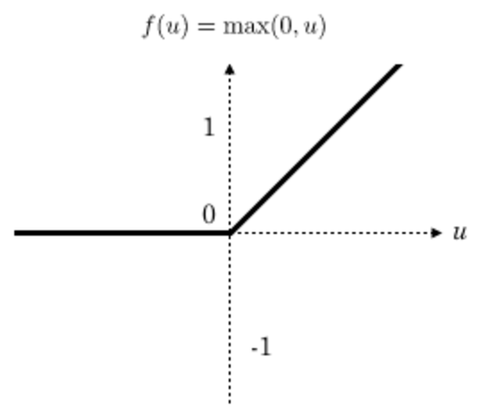
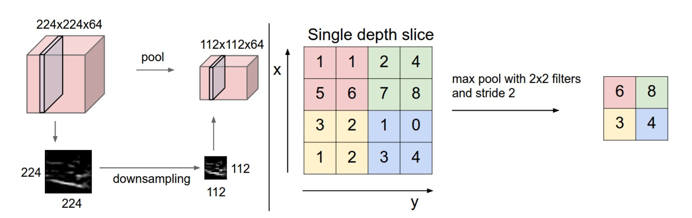

卷积神经网络与图像识别
我们介绍了人工神经网络，以及它的训练和使用。我们用它来识别了手写数字，然而，这种结构的网络对于图像识别任务来说并不是很合适。本文将要介绍一种更适合图像、语音识别任务的神经网络结构——卷积神经网络(Convolutional Neural Network, CNN)。说卷积神经网络是最重要的一种神经网络也不为过，它在最近几年大放异彩，几乎所有图像、语音识别领域的重要突破都是卷积神经网络取得的，比如谷歌的GoogleNet、微软的ResNet等，打败李世石的AlphaGo也用到了这种网络。本文将详细介绍卷积神经网络以及它的训练算法，以及动手实现一个简单的卷积神经网络。
人工神经网络网络VS卷积神经网络
人工神经网络神经网络之所以不太适合图像识别任务，主要有以下几个方面的问题：
参数数量太多，在CIFAR-10（一个比赛数据集）中，图像只有大小为32x32x3（32宽，32高，3色通道），因此在正常神经网络的第一隐藏层中的单个完全连接的神经元将具有32 32 3 = 3072个权重。这个数量仍然是可控的，但显然这个完全连接的结构不会扩大到更大的图像。例如，一个更可观的大小的图像，例如200x200x3，会导致具有200 200 3 = 120,000重量的神经元。此外，我们几乎肯定会有几个这样的神经元，所以参数会加快！显然，这种完全连接是浪费的，而且大量的参数会很快导致过度配套。
没有利用像素之间的位置信息 对于图像识别任务来说，每个像素和其周围像素的联系是比较紧密的，和离得很远的像素的联系可能就很小了。如果一个神经元和上一层所有神经元相连，那么就相当于对于一个像素来说，把图像的所有像素都等同看待，这不符合前面的假设。当我们完成每个连接权重的学习之后，最终可能会发现，有大量的权重，它们的值都是很小的(也就是这些连接其实无关紧要)。努力学习大量并不重要的权重，这样的学习必将是非常低效的。
网络层数限制 我们知道网络层数越多其表达能力越强，但是通过梯度下降方法训练深度人工神经网络很困难，因为全连接神经网络的梯度很难传递超过3层。因此，我们不可能得到一个很深的全连接神经网络，也就限制了它的能力。
那么，卷积神经网络又是怎样解决这个问题的呢？主要有三个思路：
局部连接 这个是最容易想到的，每个神经元不再和上一层的所有神经元相连，而只和一小部分神经元相连。这样就减少了很多参数。
权值共享 一组连接可以共享同一个权重，而不是每个连接有一个不同的权重，这样又减少了很多参数。
下采样 可以使用Pooling来减少每层的样本数，进一步减少参数数量，同时还可以提升模型的鲁棒性。对于图像识别任务来说，卷积神经网络通过尽可能保留重要的参数，去掉大量不重要的参数，来达到更好的学习效果
现在可能还不能理解，那我们详细说明卷积神经网络。
卷积神经网络CNN
卷积神经网络与上一章中的普通神经网络非常相似：它们由具有学习权重和偏差的神经元组成。每个神经元接收一些输入，执行点积，并且可选地以非线性跟随它。整个网络仍然表现出单一的可微分评分功能：从一端的原始图像像素到另一个类的分数。并且在最后（完全连接）层上它们仍然具有损失函数（例如SVM / Softmax），并且我们为学习正常神经网络开发的所有技巧/技巧仍然适用。
CNN每一层都通过可微分的函数将一个激活的值转换为另一个，一般来说CNN具有卷积层，池化层和完全连接层FC（正如在常规神经网络中所见）,在池化层之前一般会有个激活函数，我们将堆叠这些层，形成一个完整的架构。我们先看下大概的一个图：


CNN它将一个输入3D体积变换为输出3D体积，正常的神经网络不同，CNN具有三维排列的神经元：宽度，高度，深度。

卷积层

参数及结构
四个超参数控制输出体积的大小：过滤器大小，深度，步幅和零填充。得到的每一个深度也叫一个Feature Map。
卷积层的处理，在卷积层有一个重要的就是过滤器大小（需要自己指定），若输入值是一个[32x32x3]的大小（例如RGB CIFAR-10彩色图像）。如果每个过滤器（Filter）的大小为5×5，则CNN层中的每个Filter将具有对输入体积中的[5x5x3]区域的权重，总共5 5 3 = 75个权重（和+1偏置参数），输入图像的3个深度分别与Filter的3个深度进行运算。请注意，沿着深度轴的连接程度必须为3，因为这是输入值的深度，并且也要记住这只是一个Filter。
- 假设输入卷的大小为[16x16x20]。然后使用3x3的示例接收字段大小，CNN中的每个神经元现在将具有总共3 3 20 = 180个连接到输入层的连接。
卷积层的输出深度，那么一个卷积层的输出深度是可以指定的，输出深度是由你本次卷积中Filter的个数决定。加入上面我们使用了64个Filter，也就是[5,5,3,64]，这样就得到了64个Feature Map，这样这64个Feature Map可以作为下一次操作的输入值
卷积层的输出宽度，输出宽度可以通过特定算数公式进行得出，后面会列出公式。
卷积输出值的计算
我们用一个简单的例子来讲述如何计算卷积，然后，我们抽象出卷积层的一些重要概念和计算方法。
假设有一个55的图像，使用一个33的filter进行卷积，得到了到一个33的Feature Map，至于得到33大小，可以自己去计算一下。如下所示：

我们看下它的计算过程，首先计算公式如下：

根据计算的例子，第一次：

第二次：

通过这样我们可以依次计算出Feature Map中所有元素的值。下面的动画显示了整个Feature Map的计算过程：

步长
那么在卷积神经网络中有一个概念叫步长，也就是Filter移动的间隔大小。上面的计算过程中，步幅(stride)为1。步幅可以设为大于1的数。例如，当步幅为2时，我们可以看到得出2*2大小的Feature Map，发现这也跟步长有关。Feature Map计算如下：


外围补充与多Filter
我们前面还曾提到，每个卷积层可以有多个filter。每个filter和原始图像进行卷积后，都可以得到一个Feature Map。因此，卷积后Feature Map的深度(个数)和卷积层的filter个数是相同的。
如果我们的步长移动与filter的大小不适合，导致不能正好移动到边缘怎么办？

以上就是卷积层的计算方法。这里面体现了局部连接和权值共享：每层神经元只和上一层部分神经元相连(卷积计算规则)，且filter的权值对于上一层所有神经元都是一样的。
总结输出大小
输入体积大小
四个超参数：
- Filter数量
- Filter大小
- 步长
- 零填充大小
输出体积大小
新的激活函数-Relu
一般在进行卷积之后就会提供给激活函数得到一个输出值。我们不使用sigmoid,softmax，而使用Relu。该激活函数的定义是：
Relu函数如下：

特点
- 速度快 和sigmoid函数需要计算指数和倒数相比，relu函数其实就是一个max(0,x)，计算代价小很多
- 稀疏性 通过对大脑的研究发现，大脑在工作的时候只有大约5%的神经元是激活的，而采用sigmoid激活函数的人工神经网络，其激活率大约是50%。有论文声称人工神经网络在15%-30%的激活率时是比较理想的。因为relu函数在输入小于0时是完全不激活的，因此可以获得一个更低的激活率。
Pooling计算
Pooling层主要的作用是下采样，通过去掉Feature Map中不重要的样本，进一步减少参数数量。Pooling的方法很多，最常用的是Max Pooling。Max Pooling实际上就是在nn的样本中取最大值，作为采样后的样本值。下图是22 max pooling：

除了Max Pooing之外，常用的还有Mean Pooling——取各样本的平均值。对于深度为D的Feature Map，各层独立做Pooling，因此Pooling后的深度仍然为D。
过拟合解决办法
Dropout
为了减少过拟合，我们在输出层之前加入dropout。我们用一个placeholder来代表一个神经元的输出在dropout中保持不变的概率。这样我们可以在训练过程中启用dropout，在测试过程中关闭dropout。 TensorFlow的tf.nn.dropout操作除了可以屏蔽神经元的输出外，还会自动处理神经元输出值的scale。所以用dropout的时候可以不用考虑scale。一般在全连接层之后进行Dropout
x= tf.nn.dropout(x_in, 1.0)
FC层
那么在卷积网络当中，为什么需要加上FC层呢？
前面的卷积和池化相当于做特征工程，后面的全连接相当于做特征加权。最后的全连接层在整个卷积神经网络中起到“分类器”的作用
实例探究
卷积网络领域有几种架构，名称。最常见的是：
LeNet。卷积网络的第一个成功应用是由Yann LeCun于1990年代开发的。其中最着名的是LeNet架构，用于读取邮政编码，数字等。
AlexNet。该推广卷积网络计算机视觉中的第一部作品是AlexNet，由亚历克斯·克里维斯基，伊利亚·萨茨基弗和吉奥夫·欣顿发展。AlexNet在2012年被提交给ImageNet ILSVRC挑战，明显优于第二名（与亚军相比，前5名错误为16％，26％的错误）。该网络与LeNet具有非常相似的体系结构，但是更深入，更大和更具特色的卷积层叠在彼此之上（以前通常只有一个CONV层紧随着一个POOL层）。
ZFNet。ILSVRC 2013获奖者是Matthew Zeiler和Rob Fergus的卷积网络。它被称为ZFNet（Zeiler＆Fergus Net的缩写）。通过调整架构超参数，特别是通过扩展中间卷积层的大小，使第一层的步幅和过滤器尺寸更小，这是对AlexNet的改进。
GoogleNet。ILSVRC 2014获奖者是Szegedy等人的卷积网络。来自Google。其主要贡献是开发一个初始模块，大大减少了网络中的参数数量（4M，与AlexNet的60M相比）。此外，本文使用ConvNet顶部的“平均池”而不是“完全连接”层，从而消除了大量似乎并不重要的参数。GoogLeNet还有几个后续版本，最近的是Inception-v4。
VGGNet。2011年ILSVRC的亚军是来自Karen Simonyan和Andrew Zisserman的网络，被称为VGGNet。它的主要贡献在于表明网络的深度是良好性能的关键组成部分。他们最终的最佳网络包含16个CONV / FC层，并且吸引人的是，具有非常均匀的架构，从始至终只能执行3x3卷积和2x2池。他们预先训练的模型可用于Caffe的即插即用。VGGNet的缺点是评估和使用更多的内存和参数（140M）是更昂贵的。这些参数中的大多数都在第一个完全连接的层中，因此发现这些FC层可以在没有性能降级的情况下被去除，
ResNet。Kaiming He等人开发的残留网络 是ILSVRC 2015的获胜者。它具有特殊的跳过连接和批量归一化的大量使用。该架构在网络末端也缺少完全连接的层。读者也参考了凯明的演讲（视频，幻灯片），以及一些最近在火炬中复制这些网络的实验。ResNets目前是迄今为止最先进的卷积神经网络模型，并且是实际使用ConvNets的默认选择（截至2016年5月10日）。特别是，也看到最近从Kaiming He等人调整原有架构的发展。
下面就是VGGNet的结构：
INPUT: [224x224x3] memory: 224*224*3=150K weights: 0
CONV3-64: [224x224x64] memory: 224*224*64=3.2M weights: (3*3*3)*64 = 1,728
CONV3-64: [224x224x64] memory: 224*224*64=3.2M weights: (3*3*64)*64 = 36,864
POOL2: [112x112x64] memory: 112*112*64=800K weights: 0
CONV3-128: [112x112x128] memory: 112*112*128=1.6M weights: (3*3*64)*128 = 73,728
CONV3-128: [112x112x128] memory: 112*112*128=1.6M weights: (3*3*128)*128 = 147,456
POOL2: [56x56x128] memory: 56*56*128=400K weights: 0
CONV3-256: [56x56x256] memory: 56*56*256=800K weights: (3*3*128)*256 = 294,912
CONV3-256: [56x56x256] memory: 56*56*256=800K weights: (3*3*256)*256 = 589,824
CONV3-256: [56x56x256] memory: 56*56*256=800K weights: (3*3*256)*256 = 589,824
POOL2: [28x28x256] memory: 28*28*256=200K weights: 0
CONV3-512: [28x28x512] memory: 28*28*512=400K weights: (3*3*256)*512 = 1,179,648
CONV3-512: [28x28x512] memory: 28*28*512=400K weights: (3*3*512)*512 = 2,359,296
CONV3-512: [28x28x512] memory: 28*28*512=400K weights: (3*3*512)*512 = 2,359,296
POOL2: [14x14x512] memory: 14*14*512=100K weights: 0
CONV3-512: [14x14x512] memory: 14*14*512=100K weights: (3*3*512)*512 = 2,359,296
CONV3-512: [14x14x512] memory: 14*14*512=100K weights: (3*3*512)*512 = 2,359,296
CONV3-512: [14x14x512] memory: 14*14*512=100K weights: (3*3*512)*512 = 2,359,296
POOL2: [7x7x512] memory: 7*7*512=25K weights: 0
FC: [1x1x4096] memory: 4096 weights: 7*7*512*4096 = 102,760,448
FC: [1x1x4096] memory: 4096 weights: 4096*4096 = 16,777,216
FC: [1x1x1000] memory: 1000 weights: 4096*1000 = 4,096,000
TOTAL memory: 24M * 4 bytes ~= 93MB / image (only forward! ~*2 for bwd)
TOTAL params: 138M parameters
与卷积网络一样，注意大多数内存（以及计算时间）都是在早期的CONV层中使用的，大多数参数都在最后的FC层。在这种特殊情况下，第一个FC层包含100M的权重，总共140M。